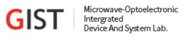
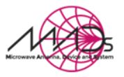

Overview
“2021년 전력 산업 활용을 위한 테라헤르츠파 기술 워크숍”은 한전
기초연구 과제에서의 테라헤르츠파 기술 성과를 공유하고 전력
산업으로의 활용 가능성 및 연구 성과 확산을 모색하기 위한 자리입니다.
Location and Date
장소: Zoom을 이용한 비대면 워크숍
일시: 2021년 4월 30일
Zoom ID & PW:
일시: 2021년 4월 30일
Zoom ID & PW:
Hosted by
Terahertz Photonics Laboratory
Chonnam National University
Nano-Ultrafast Phenomena Laboratory
Incheon National University
Bahk Lab for THz Spectroscopy
Incheon National University
MADs Laboratory - Microwave Antenna, Device and System
Postech
Microwave-optoelectronic Intergrated Device And System Lab
GIST

